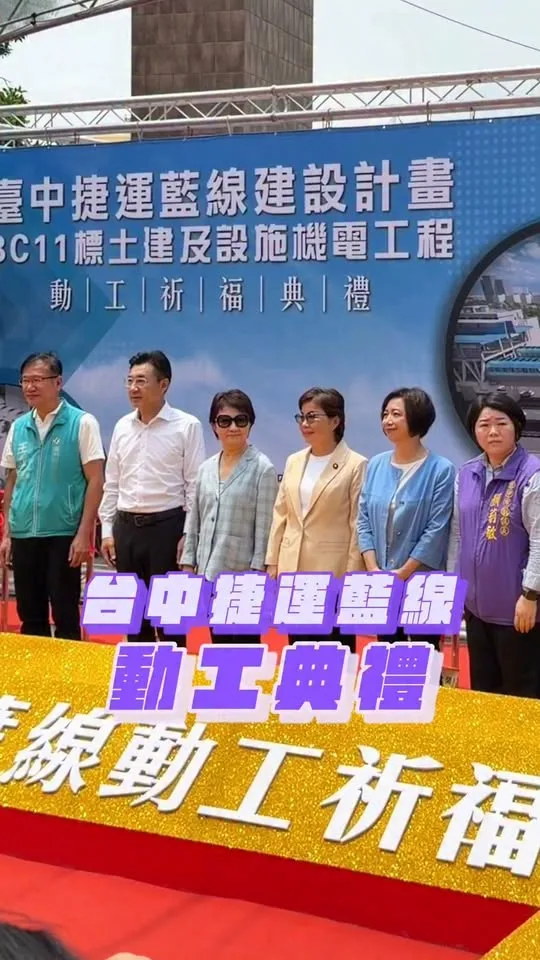
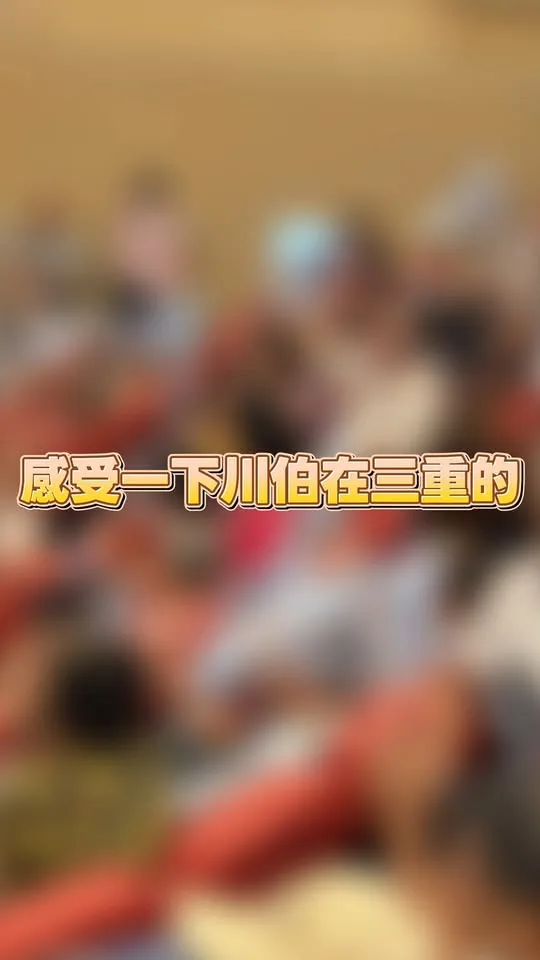

競選總部9/12成立！馬戲團＋文化復興＋青年局 阿純大公開
Posts
競選總部9/12成立！馬戲團＋文化復興＋青年局 阿純大公開


Step up to the plate with Council Member Wang Min-sheng and hit a home run for Team Taipei!

@su.chiaohui:「巧志工」熱烈招募中！✨ 走過一場又一場的活動，每次站上舞台，最讓我安心的，永遠是場邊那群默默忙碌的志工身影。 這群巧志工夥伴們陪我穿梭新北各區，是因為大家和我一樣對新北充滿期待！ 剩下不到一百天的時間，我們需要更多夥伴，一起衝刺，為彩色的新北努力！ 誠摯邀請你加入「巧志工」，一起讓新北因你而改變。 🔗 巧志工熱血登記表單： https://forms.gle/RtzN8XVeMhNv1bs27

@schuanglawyer:明天晚上19:00，動起來！八德興仁花園夜市✨ 興仁花園夜市是在地人氣夜市，美食選擇超豐富，從鹹酥雞、牛排、滷味到各式甜點小吃，還有不少遊戲攤位，越晚越熱鬧🔥 明晚世杰來到興仁花園夜市，和大家一起逛夜市、吃美食、感受八德夜晚的熱鬧活力！心八德，動起來💖

周末行程來囉， 這禮拜不用畫烏龜， 暑假尾聲玩水去！ ⠀ 8/29（六） ⠀ 09:00 📍東湖五分市場 ⠀ 8/30（日） ⠀ 09:00 📍永春市場 ⠀ 10:00 林延鳳議員＿i鳳水上派對親子活動 📍七星公園

台中毛孩38萬！何欣純「寵愛毛孩5大安心」＋500元寵物券一次講
#臺中升級 #幸福加給 北區升級，不能少了你的聲音！💪 城市要進步，就要走進地方、傾聽鄉親真正的需求。9月2日（三）下午，啟臣將與立委黃健豪、市議員陳文政來到北區莒光新城，向大家報告問政成果與施政願景，也聽聽大家對北區未來的期待與建議。 📍活動資訊 時間｜9/2（三）16:30 地點｜北區莒光新城（臺中市北區樂英里錦南街34-1號前） 北區要升級、臺中要向前，需要大家一起來！下週三下午，莒光新城見！👋 #臺中啟程 #打造旗艦城 #北區 #莒光新城 #幸福旗艦城 #TaichungWay


等了8年，捷運藍線動工了！ 台中捷運路網要全力有效率推進！中央地方一起，做好交通配套，工程時程公開透明，讓市民清楚。 新台中，交給何欣純！
柯志恩勘災拋錨爬窗被酸 陳菁徽酸和卓榮泰不一樣「修車錢要自己付」 〈 柯志恩勘災拋錨爬窗被酸 陳菁徽酸和卓榮泰不一樣「修車錢要自己付」 〉本文來自於《 龍傳媒新聞 iNews Long 》。 豪雨狂炸高雄，淹出政治口水，國民黨高雄市長參選人柯志恩勘災時座車拋錨，被迫「爬車窗」脫困，遭綠營及側翼批評自導自演...

每一件好物，都代表一份讓台北進步的力量.ᐟ .ᐟ ⠀ ⠀ 從帽子、衣服、提袋，到可愛的「奔奔」與「抱抱」， 歡迎大家找到喜歡的組合，一起加入洋流、讓台北順起來！ ⠀ 🔗 𝙡𝙞𝙣𝙠 𝙞𝙣 𝙗𝙞𝙤連結請見主頁 #台北順起來 #你的市長沈伯洋

@schuanglawyer:晚上來到柏翰的說明會，感謝杰伴跟小企鵝們，特別準備應援物！
@hsiehlungchieh:公告》今晚龍介直播暫停一次…各位市民朋友我們下集見
「巧志工」熱烈招募中！✨ 走過一場又一場的活動，每次站上舞台，最讓我安心的，永遠是場邊那群默默忙碌的志工身影。 這群巧志工夥伴們陪我穿梭新北各區，是因為大家和我一樣對新北充滿期待！ 剩下不到一百天的時間，我們需要更多夥伴，一起衝刺，為彩色的新北努力！ 誠摯邀請你加入「巧志工」，一起讓新北因你而改變。 🔗 巧志工熱血登記表單： https://forms.gle/RtzN8XVeMhNv1bs27 🔔歡迎到我的臉書，直接點擊連結！

明天晚上19:00，動起來！八德興仁花園夜市✨ 興仁花園夜市是在地人氣夜市，美食選擇超豐富，從鹹酥雞、牛排、滷味到各式甜點小吃，還有不少遊戲攤位，越晚越熱鬧🔥 明晚世杰來到興仁花園夜市，和大家一起逛夜市、吃美食、感受八德夜晚的熱鬧活力！心八德，動起來💖
@pumashen:周末行程來囉，這禮拜不用畫烏龜， 暑假尾聲玩水去！ ⠀ 8/29（六） ⠀ 09:00 📍東湖五分市場 ⠀ 8/30（日） ⠀ 09:00 📍永春市場 ⠀ 10:00 林延鳳議員＿i鳳水上派對親子活動 📍七星公園
新台中，交給何欣純！等了8年，捷運藍線動工了！台中捷運路網要全力有效率推進！中央地方一起，做好交通配套，工程時程公開透明，讓市民清楚。
#臺中升級 #幸福加給 北區升級，不能少了你的聲音！💪 城市要進步，就要走進地方、傾聽鄉親真正的需求。9月2日（三）下午，啟臣將與立委黃健豪、市議員陳文政來到北區莒光新城，向大家報告問政成果與施政願景，也聽聽大家對北區未來的期待與建議。 📍活動資訊 時間｜9/2（三）16:30 地點｜北區莒光新城（臺中市北區樂英里錦南街34-1號前） 北區要升級、臺中要向前，需要大家一起來！下週三下午，莒光新城見！👋 #臺中啟程 #打造旗艦城 #北區 #莒光新城 #幸福旗艦城 #TaichungWay
@su.chiaohui:TEAM TAIWAN 拓荒探險隊第三彈角色曝光！ 猜猜看這次登場的是誰？沒錯，就是大家最熟悉的「水獺媽媽」✨
@pumashen:每一件好物，都代表一份讓台北進步的力量.ᐟ .ᐟ ⠀ 從帽子、衣服、提袋，到可愛的「奔奔」與「抱抱」，歡迎大家找到喜歡的組合，一起加入洋流、讓台北順起來！
每一件好物，都代表一份讓台北進步的力量.ᐟ .ᐟ ⠀ ⠀ 從帽子、衣服、提袋，到可愛的「奔奔」與「抱抱」，歡迎大家找到喜歡的組合，一起加入洋流、讓台北順起來！ ⠀ #台北順起來#你的市長沈伯洋

晚上來到柏翰的說明會，感謝杰伴跟小企鵝們，特別準備應援物！

@a_chun1973:辦公室同仁準備五款常見辣椒醬，要我來場盲猜大挑戰！ 🌶️ 身為無辣不歡的資深辣椒系選手（？），這題對我來說應該只是桌頂拈柑（toh-tíng ni-kam）而已吧～ 👇 辣純派集合！留言推薦你心中的必吃辣椒／辣椒醬吧！
「巧志工」熱烈招募中！✨ 走過一場又一場的活動，每次站上舞台，最讓我安心的，永遠是場邊那群默默忙碌的志工身影。 這群巧志工夥伴們陪我穿梭新北各區，是因為大家和我一樣對新北充滿期待！ 剩下不到一百天的時間，我們需要更多夥伴，一起衝刺，為彩色的新北努力！ 誠摯邀請你加入「巧志工」，一起讓新北因你而改變。 🔗 巧志工熱血登記表單： https://forms.gle/RtzN8XVeMhNv1bs27

明天晚上19:00，動起來！八德興仁花園夜市✨ 興仁花園夜市是在地人氣夜市，美食選擇超豐富，從鹹酥雞、牛排、滷味到各式甜點小吃，還有不少遊戲攤位，越晚越熱鬧🔥 明晚世杰來到興仁花園夜市，和大家一起逛夜市、吃美食、感受八德夜晚的熱鬧活力！心八德，動起來💖
周末行程來囉，這禮拜不用畫烏龜，暑假尾聲玩水去！ ⠀ 8/29（六） ⠀ 09:00 📍東湖五分市場 ⠀ 8/30（日） ⠀ 09:00 📍永春市場 ⠀ 10:00 林延鳳議員＿i鳳水上派對親子活動 📍七星公園
@a_chun1973:等了8年，捷運藍線動工了！ 台中捷運路網要全力有效率推進！中央地方一起，做好交通配套，工程時程公開透明，讓市民清楚。 新台中，交給何欣純！
綠線延伸大坑！何欣純4年內動工＋拼完工


在三重，被握了一整場。 從門口走到台前，走了好久，因為每一雙手都值得停下來。 說實在，鐵鎚我拿得動，但這份熱情，比鐵鎚重多了。

每一件好物，都代表一份讓台北進步的力量.ᐟ .ᐟ ⠀ ⠀ 從帽子、衣服、提袋，到可愛的「奔奔」與「抱抱」， 歡迎大家找到喜歡的組合，一起加入洋流、讓台北順起來！ ⠀ 🔗 𝙡𝙞𝙣𝙠 𝙞𝙣 𝙗𝙞𝙤連結請見主頁 #台北順起來 #你的市長沈伯洋

Every great product represents a force for progress in Taipei.ᐟ .ᐟ